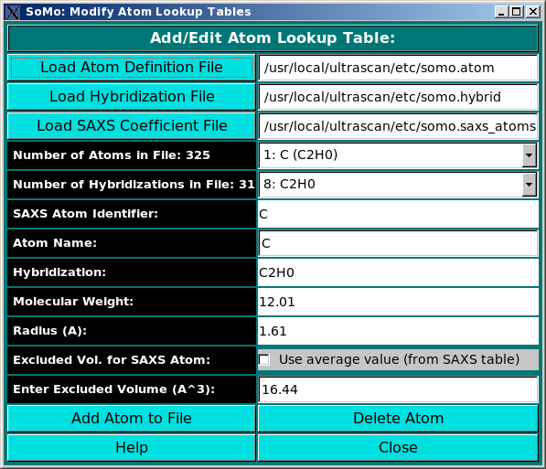

|
Manual
|
SOMO - Add/Edit Atom Lookup Table Module:

In this module, you can edit the atom table, where the atomic groups present
in PDB files need to be defined and their parameters (molecular weight and
radius) loaded from the hybridization table. In addition, for SAXS simulation
this table is also linked to the SAXS coefficients table, and the excluded volume
for each atomic group is defined in alternative to that of the bare non-hydrogen atom
taken from the SAXS coefficient table. Load the hybridization file first, then the
atom file if one exists, and then the SAXS coefficients file. Add new atoms to it by
filling out the fields and clicking on Add Atom to File. You can also
delete an atom (Delete Atom) from the file.
-
The first field (Number of Atoms in File:) lists the existing
defined atomic groups (with their corresponding hybridization in parentheses),
and you can select one from the pull-down list for editing. To enter a new atom,
go to the Atom Name: field (see below).
-
The second field (Number of Hybridizations in File:) lists the
existing hybridizations, from which one can be picked up from the pull-down list and
entered in the Hybridization: field (see below). This operation
will also automatically populate the SAXS Atom Identifier:,
Molecular Weight: and Radius (A): fields (see below).
-
The third field SAXS Atom Identifier is not directly editable, and is
populated according to the hybridization selected.
-
The fourth field, Atom Name, is where you can enter a new atomic group.
-
The fifth field, Hybridization:, is instead polulated by picking up an existing
hybridization from the pull-down list in the Number of Hybridizations in File:
field (see above).
-
The following two fields, Molecular Weight: and Radius (A):,
are automatically populated once an hybridization is selected (see above).
-
The Excluded Vol. for SAXS Atom: field contains a selectable option,
Use average value (from SAXS table). If selected, it will automatically populate
the field below, Enter Excluded Volume (A^3): with the atomic excluded
volume for the non-hydrogen atom being defined, picked up from the SAXS coefficients
table.
-
Alternatively, to allow for entering more detailed values, the excluded volume for a particular
atomic group can be directly entered in the Enter Excluded Volume (A^3): field.
After editing is completed, the updated table can be saved by clicking on
"Add Atom to File"
www contact: Borries Demeler
This document is part of the UltraScan Software Documentation
distribution.
Copyright © notice.
The latest version of this document can always be found at:
http://www.ultrascan.uthscsa.edu
Last modified on January 27, 2010.